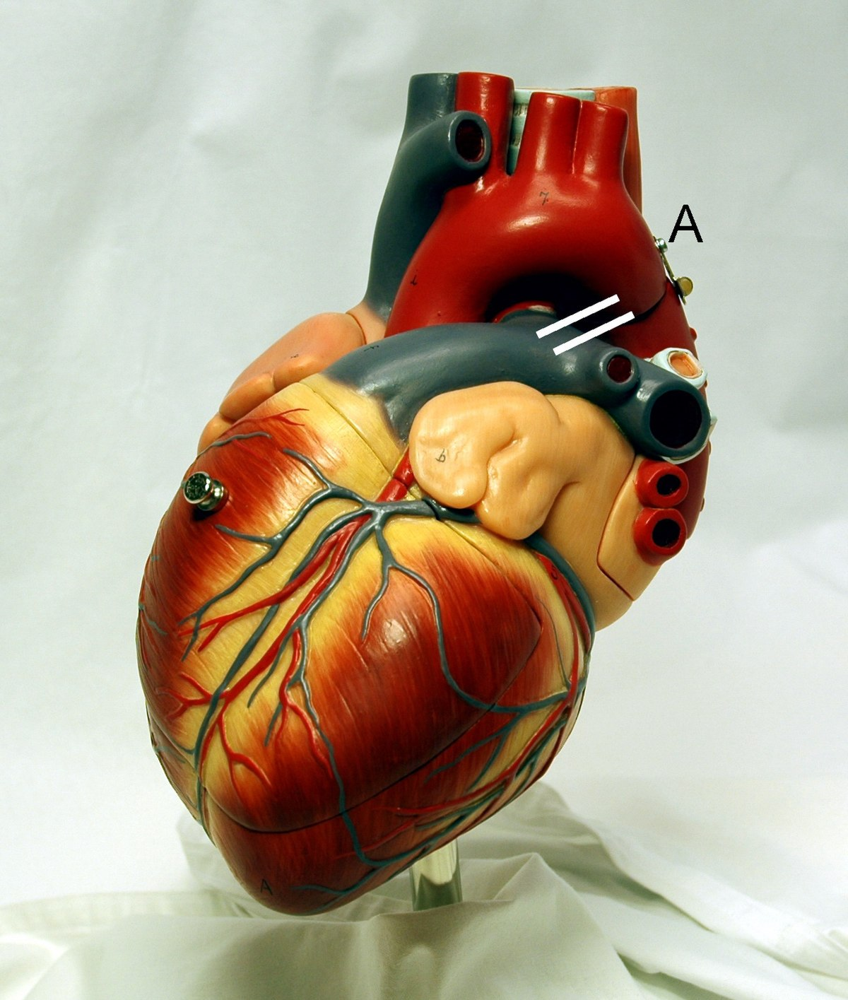
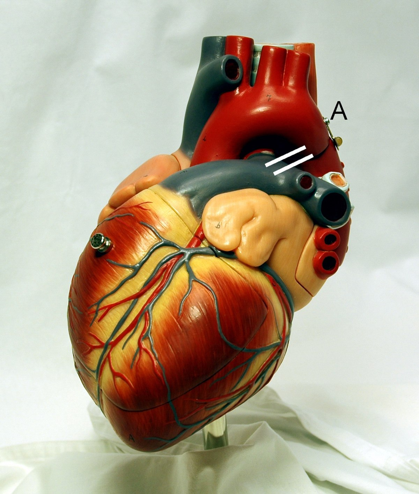

محمد أحمد عقيل باعمر :
صديقي المحبوب، محمد أحمد باعمر، هو كنز يُخفى في أعماق قلبي، فهو ليس مجرد رفيق درب، بل هو رفيق روحي. يتجاوز محمد حدود الصداقة العادية، حيث يفهمني حتى في أصغر التفاصيل ويقف بجانبي في كل محنة. محمد يشاركني فرحي ويشد على يدي في حزني، وببساطة هو الشخص الذي يعرفني بصورة أفضل من نفسي. محمد أحمد باعمر لا يحاسبني على أخطائي، بل يقف بجواري ليساعدني على تجاوزها. يمتلك قدرة فريدة على إضفاء البهجة حتى على أصعب اللحظات، ويشعرني بالأمان بوجوده. نشارك سوياً الضحك والبكاء، ونبني معًا ذكريات تبقى خالدة في قلوبنا. محمد أحمد باعمر ليس فقط شخصًا أتحدث إليه، بل هو الأذن التي تستمع بدقة، والقلب الذي يفهم بلا حاجة للشرح. يعرف كيف يرفعني في أوقات الضعف، ويشاركني الأفراح دون حسد. ببساطة، محمد أحمد باعمر هو النعمة التي لا يمكنني الاستغناء عنها، والروح التي تنير حياتي ببريقها الخاص.❤️💕🫀
صور خارجية لك :
 
